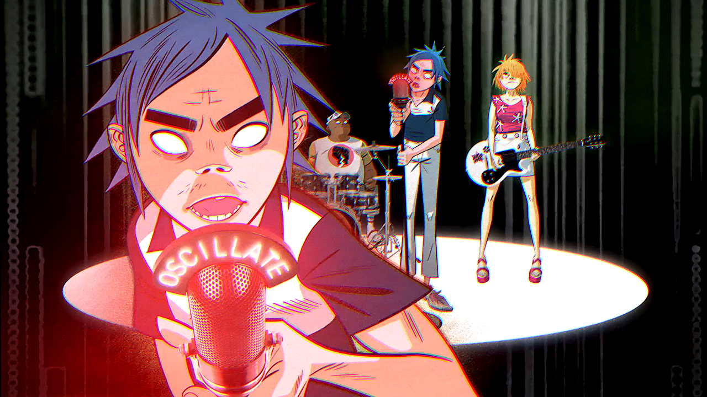
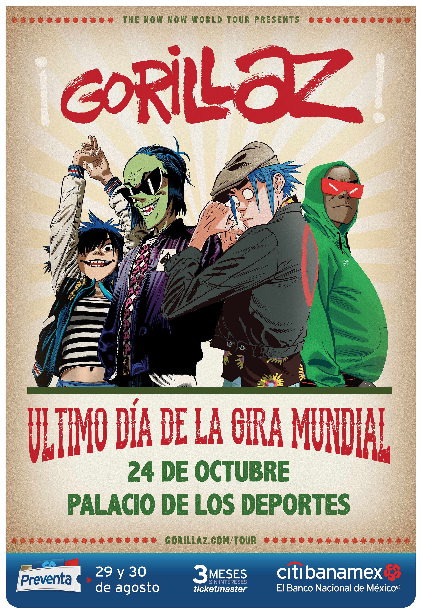
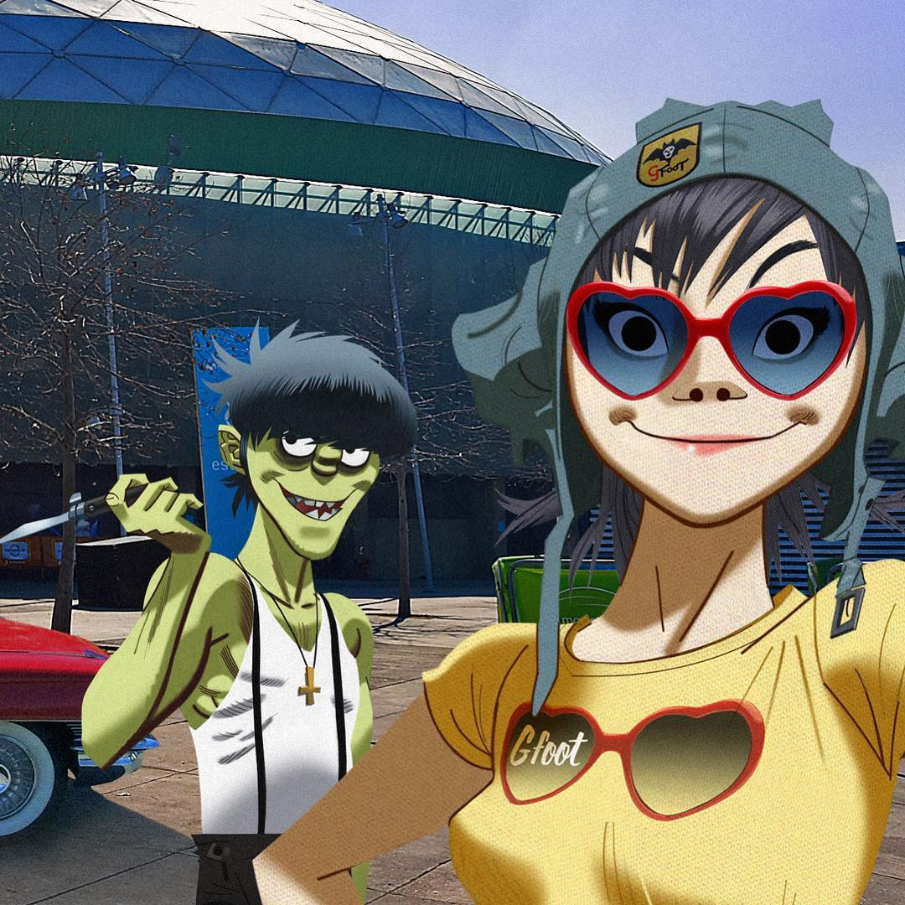

Gorillaz X G-Shock - In Conversation + Ruessel and Noodle Watches
14.12.18
Watch Noodle and 2D hang out here with G-SHOCK inventor, Mr Ibe, and chat about ‘Mission M101′, the highs and lows of getting watches on aliens’ wrists, rocket cars and exploding heads. Also, Noodle’s and Russel’s custom Gorillaz watches are dropping tomorrow, Saturday 15th December, Online and in G-Shock stores globally – go to gtimeisnow.com for details. UK customers please note these will ONLY be available from G-SHOCK’s store on Carnaby Street, London on Saturday 15th December from 9am. Get there early to avoid disappointment. (1 piece per customer)
Watch Part 2 of Gorillaz' Mission in Space
25.10.18

Last time we saw our intrepid travellers, they were rocketing their way through space on their mission to play a gig in Galaxy M101 and give Mr Ibe’s G-Shock watches to aliens. See what went down next here A very limited quantity of Gorillaz’ character watches will be available for early pre-order exclusively here from 5pm BST on 25th October.
Demon Dayz Festival: The Countdown has begun
10.10.18

The countdown has officially begun. Prepare to lose yourself at Demon Dayz Festival Los Angeles in only 10 days, with live performances from…
Main Stage - Gorillaz, Erykah Badu, DRAM and Hypnotic Brass Ensemble
LIVING SOULS ARENA - The Internet, Little Simz, Ana Tijoux, Kilo Kish, Tony Allen and Las Cafeteras
Stay tuned for more announcements on what you can expect on the day, including bespoke art installations, a Gorillaz Tattoo Bus, La Lucha Libre, Food & Drink stalls, merchandise, shops and much more.
Watch Gorillaz in Space
20.09.18

If you were wondering who Noodle was pictured hanging out with in Tokyo on her latest Instagram post, look no further. It was whilst in Japan over the summer on The Now Now Tour that Noodle met Mr Ibe, creator of G-Shock. United on intergalactic dreams, mission M101 was born. It was decided that Noodle, 2D, Russel and Murdoc (yes, he’s FREE) would be the first band to perform a gig in space. Watch the first episode now.
Watch the 'Tranz' Video now!
13.09.18

Marking the band’s first ever live performance video and only live performance since 2010’s unforgettable MTV EMA performance, watch the eye-popping video for TRANZ here . It sees 2D command the stage against a backdrop of mind-altering visuals alongside bandmates Noodle and Russel Hobbs, with Gangreen Gang’s Ace on bass standing in for the temporarily incarcerated Murdoc Niccals…
Gorillaz announce show in Mexico City
22.08.18

IGorillaz are back in Mexico for the last stop of THE NOW NOW world tour! The band play Palacio de los Deportes in Mexico City on 24th October 2017. Pre sale will begin on August 29 at 11:00 AM CST. Citibanamex card holders will be able to purchase tickets here until August 30 at 11:59 PM CST. The general on sale will begin on August 31 at 11:00 AM CST, valid for all payment methods.
Chat with Murdoc and Noodle right now!
17.08.18

Murdoc Niccals is back online this time with Noodle… You can reach them RIGHT NOW via text on Facebook Messenger, Skype and KIK. Be quick! All the details are here & you can reach them at the following times today – 3pm – 9pm BST / 7am – 1PM PST